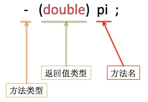
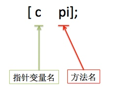
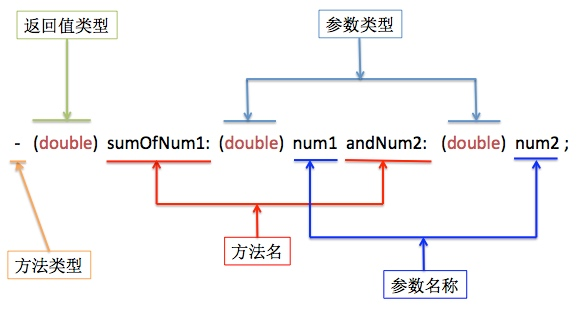
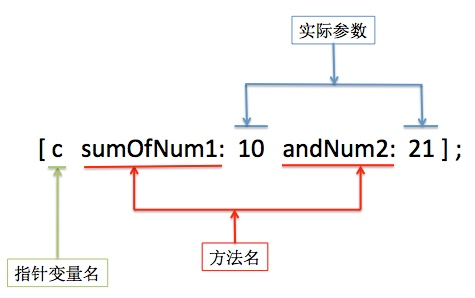

一、OC方法
（一）对象方法
- 对象方法以-开头如
-（void）xx; - 对象方法只能又对象来调用
- 对象方法中可以访问当前对象的成员变量
- 调用格式
[对象名 对象方法名]; - 设计一个学生类和狗类，练习对象方法的使用。
学生类的声明:
#import <Foundation/Foundation.h>
#import "Dog.h"
//设计一个学生类,学生的属性包括:性别,生日,体育,最喜欢的颜色,狗(体重,毛瑟,吃)
//方法: 吃, 跑步, 遛狗, 喂狗
//定义枚举类型,学生的性别
typedef enum {
Sexman,
SexWoman
} Sex;
//定义结构体: 生日
typedef struct {
int year;
int month;
int day; //请注意结构体和枚举的区别
}Date;
//定义枚举类型,学生喜欢的颜色
typedef enum {
ColorBlack,
ColorRed,
ColorGreen
} Color;
@interface Student : NSObject
{
@public
Sex sex;
Date birthday;
int weight;
Color favColor;
Dog *dog;
NSString *name;
}
- (void)eat;
- (void)run;
- (void)print;
- (void)weiDog;
- (void)liuDog;
@end
学生类的实现:
#import "Student.h"
@implementation Student
- (void)eat {
weight += 1;
NSLog(@"人吃完这次后的体重是:%d", weight);
}
- (void)run {
weight -= 1;
NSLog(@"人跑完这次后的体重是%d", weight);
}
- (void)print {
NSLog(@"性别=%d,喜欢的颜色=%d,生日=%d-%d-%d,姓名=%@",
sex, favColor, birthday.year, birthday.month, birthday.day, name);
}
- (void)weiDog {
[dog eat];
}
- (void)liuDog {
[dog run];
}
@end
狗类的声明:
#import <Foundation/Foundation.h>
@interface Dog : NSObject
{
@public
double weight;
}
- (void)run;
- (void)eat;
@end
狗类的实现:
#import "Dog.h"
@implementation Dog
- (void)run {
weight -= 1;
NSLog(@"狗跑完这次的体重的%f", weight);
}
- (void)eat {
weight += 1;
NSLog(@"狗吃完这次的体重是%f", weight);
}
@end
主程序:
#import "Dog.h"
@implementation Dog
- (void)run {
weight -= 1;
NSLog(@"狗跑完这次的体重的%f", weight);
}
- (void)eat {
weight += 1;
NSLog(@"狗吃完这次的体重是%f", weight);
}
@end
//打印结果
2016-05-28 16:56:46.020 test[4047:153793] 性别=0,喜欢的颜色=1,生日=2016-5-28,姓名=xiaoming
2016-05-28 16:57:15.766 test[4047:153793] 人跑完这次后的体重是49
2016-05-28 16:57:17.281 test[4047:153793] 人吃完这次后的体重是:50
2016-05-28 16:57:20.926 test[4047:153793] 狗吃完这次的体重是21.000000
2016-05-28 16:57:22.423 test[4047:153793] 够跑完这次的体重的20.000000
2016-05-28 16:57:24.820 test[4047:153793] 狗吃完这次的体重是21.000000
2016-05-28 16:57:26.641 test[4047:153793] 够跑完这次的体重的20.000000
（二）类方法
- 类方法以+开头 如
+（void）put; - 类方法只能由类来调用
- 类方法中不能访问实例（成员）变量，因为类方法又类来调用，并没有创建存储空间来存储类中的成员变量。
- 调用格式：
[类名 类方法名]; - 类方法的好处：不依赖于对象，执行效率更高；能用类方法解决的问题，尽量使用类方法。适用场合：当方法内部不需要使用到成员变量时，可以改为类方法。
- 设计一个计算器类，练习使用类方法。
计算器类的声明:
#import <Foundation/Foundation.h>
@interface JiSuanQi : NSObject
// 实现一个简单的计算器工具类,实现一个类方法,计算三个整数的和.
//工具类一遍没有成员变量
+ (int)SumWithNumber1:(int)num1 Number2:(int)num2 Number3:(int)num3;
@end
计算器类的实现:
#import "JiSuanQi.h"
@implementation JiSuanQi
+ (int)SumWithNumber1:(int)num1 Number2:(int)num2 Number3:(int)num3 {
return num1 + num2 + num3;
}
@end
主程序: 直接使用类名调用类方法
#import <UIKit/UIKit.h>
#import "AppDelegate.h"
#import "JiSuanQi.h"
int main(int argc, char * argv[]) {
@autoreleasepool {
int a = [JiSuanQi SumWithNumber1:10 Number2:20 Number3:30];
int b = [JiSuanQi SumWithNumber1:100 Number2:200 Number3:300];
NSLog(@"a = %d, b = %d", a, b);
return UIApplicationMain(argc, argv, nil, NSStringFromClass([AppDelegate class]));
}
}
//打印结果
2016-05-28 17:12:29.506 test[4472:200665] a = 60, b = 600
注意1：可以允许类方法和对象方法同名。 注意2：在对象方法中可以调用类方法。
（三）方法名
（1）不带参数的方法
声明：

调用：

（2）带参数的方法
声明：

调用：

注意:冒号也是方法名的一部分。
二、文件编译
在工作中，通常把不同的类放到不同的文件中，每个类的声明和实现分开，声明写在.h头文件中，实现写在相应的.m文件中去，类名是什么，文件名的前缀就是什么。
假设有两个类，分别是Person类和Dog类，则通常有下面五个文件:
- Person.h Person类的声明文件
- Person.m Person类的实现文件
- Dog.h Dog类的声明文件
- Dog.m Dog类的实现文件
- Main.m 主函数（程序入口）
在主函数以及类的实现文件中要使用#import包含相应的头文件。
补充：import有两个作用：一是和include一样，完完全全的拷贝文件的内容；二是可以自动防止文件内容的重复拷贝（即使文件被多次包含，也只拷贝一份）。
在使用命令行进行编译链接文件的时候，通常是把.m文件单文件编译，然后再把所有的目标文件链接，但是在Xcode中，是把所有的.m文件都进行编译链接的，如果出现重复定义的错误，那大部分问题根源应该就是文件内容被重复包含或者是包含.m文件所引起的。
源文件中不论是使用include还是import，都不能包含.m或者是.c文件，只能放声明。因此，在OC中通常把类拆分开来，拆分成声明和实现两个部分。
提示：这也是编程思想的一种体现，可以说.h和.m文件时完全独立的，只是为了要求有较好的可读性，才要求两个文件的文件名一致，这也是把接口和实现分离，让调用者不必去关心具体的实现细节。
Xcode是写一行编译一行，有简单的修复功能，红色是错误提示，黄色警告。如果在程序中声明了一个变量，但是这个变量没有被使用也会产生警告信息。在调试程序的时候，如果发现整个页面都没有报错，但是一运行就错误，那么一定是链接报错。